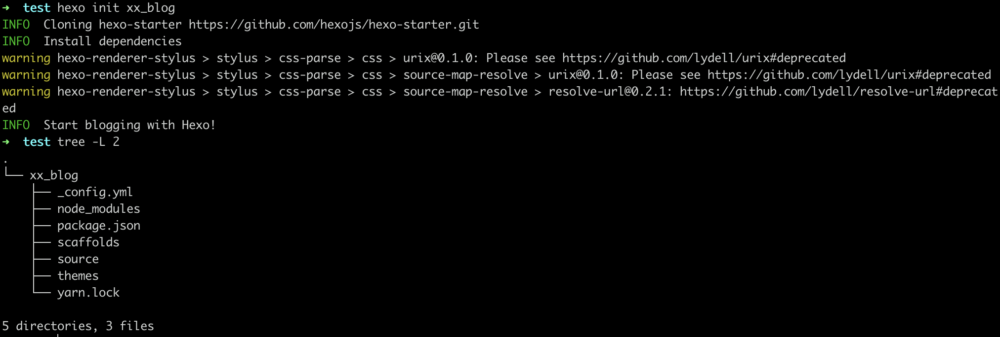

Airren Ren
August 7, 2020
「Hexo」 搭建部署
Hexo 安装
-
安装Node.js
-
安装Git
-
安装Hexo
1sudo npm install -g hexo-cli如果在mac中安装报
/usr/lib/node_modules/的操作权限问题，执行以下命令。1sudo chown -R `whoami` /usr/local/lib/node_modules -
初始化项目
1hexo init blog
创建完成后，当前目录下会有一个
xx_blog的文件夹，具体的文件夹查询官网hexo.io
Hexo 部署到Nginx & Github.io
开发机
在自己写Blog的Pc上安装插件
1yarn add hexo-deployer-git
服务器
-
在即将部署的服务器上执行以下操作
1yum install git 2 3useradd -m git # 创建一个git用户，用来运行git服务 4 # 新建git用户并非必要，但是为了安全起见，还是用git用户单独来运行git服务 5 6passwd git -
设置PC到服务器的git用户免密登录
1# 生成ssh密钥 2ssh-keygen 3# 将公钥添加到server 4ssh-copy-id git@serverIp -
在服务器上初始化一个Git仓库
1mkdir -p /var/repo 2ca /var/repo 3git init --bare blog.git # --bare 初始化一个裸仓库，裸仓库没有工作区，只为共享而存在 4chown -R git:git blog.git 配置Git hooks
1mkdir /var/repo/blog.git/hooks 2vi post-receive 写入以下内容
1#!/bin/sh 2git --work-tree=/var/www/blog --git-dir=/home/git/byte_gopher_blog.git checkout -f 3# /var/www/blog 是部署目录。 每次push完成之后 增加可执行权限
1chmod +x /var/repo/blog.git/hooks/post-receive禁用git用户的shell登录权限
1vi /etc/passwd 2# git❌1001:1001:,,,:/home/git:/bin/bash 3 git❌1001:1001:,,,:/home/git:/usr/bin/git-shell最后再禁用
-
部署nginx
创建需要的代理文件夹
1mkdir -p /home/www/hexo #创建目录 2chown -R git:git /home/www/hexo # 增加git用户权限修改nginx配置
/etc/nginx/nginx.conf1 server { 2 listen 80 default_server; 3 listen [::]:80 default_server; 4 server_name _; 5 root /home/www/hexo; 6 7 include /etc/nginx/default.d/*.conf; 8 9 location / { 10 } 11 12 error_page 404 /404.html; 13 location = /40x.html { 14 } 15 16 error_page 500 502 503 504 /50x.html; 17 location = /50x.html { 18 } 19 }-
配置hexo
_config.yml1# URL 2## If your site is put in a subdirectory, set url as 'http://yoursite.com/child' and root as '/child/' 3url: https://www.bytegopher.com # 为了避免不必要的麻烦此处设置根域名 & 根目录 4root: / 5 6# Deploymentbranch: gh-pages # branch name, whaterver
-
-
发布Blog
写完博客之后直接发布就可以更新到Nginx服务器& Github.io
1hexo clean & hexo d -g?
参考资料
https://www.jianshu.com/p/e1ccd49b4e5d